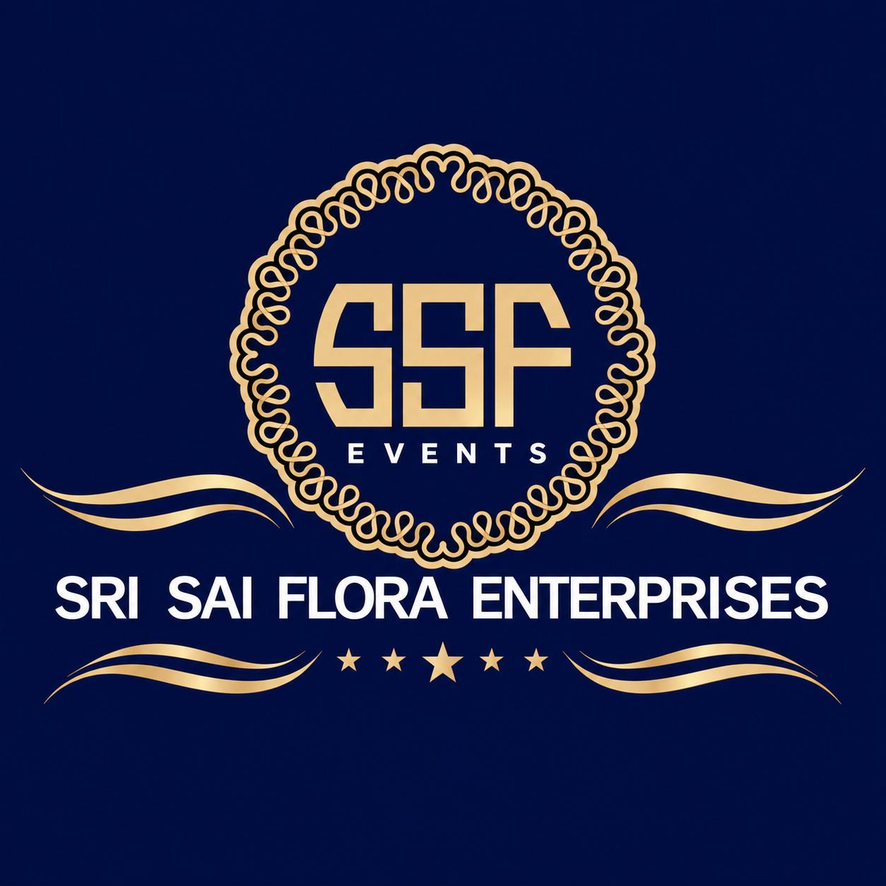

ನವೆಂಬರ್ 1 · NOVEMBER 1
ಕನ್ನಡ ರಾಜ್ಯೋತ್ಸವದ
ಹಾರ್ದಿಕ ಶುಭಾಶಯಗಳು
Happy Kannada Rajyotsava
70 years of a united Karnataka · 1956–2026
ಕರ್ನಾಟಕ ಏಕೀಕರಣಕ್ಕೆ 70 ವರ್ಷ
SSF Events · Kolar
@ssf_events
ನವೆಂಬರ್ 1 · NOVEMBER 1
Happy Kannada Rajyotsava
70 years of a united Karnataka · 1956–2026
ಕರ್ನಾಟಕ ಏಕೀಕರಣಕ್ಕೆ 70 ವರ್ಷ

SSF Events · Kolar Swipe →ಕರ್ನಾಟಕ ಒಂದಾದ ಕಥೆ
How Karnataka became one
1905
ಆಲೂರು ವೆಂಕಟರಾಯರು ಕರ್ನಾಟಕ ಏಕೀಕರಣ ಚಳವಳಿಗೆ ನಾಂದಿ ಹಾಡಿದರು.
Aluru Venkata Rao starts the Karnataka Ekikarana (unification) movement.
1956
ನವೆಂಬರ್ 1: ಬಾಂಬೆ, ಮದ್ರಾಸ್, ಹೈದರಾಬಾದ್ ರಾಜ್ಯಗಳ ಹಾಗೂ ಕೊಡಗಿನ ಕನ್ನಡ ಪ್ರದೇಶಗಳು ಮೈಸೂರು ರಾಜ್ಯದಲ್ಲಿ ಒಂದಾದವು.
Nov 1: Kannada-speaking areas of Bombay, Madras and Hyderabad states and Coorg join Mysore State.
1973
ನವೆಂಬರ್ 1: ಮುಖ್ಯಮಂತ್ರಿ ಡಿ. ದೇವರಾಜ ಅರಸು ಅವರ ಕಾಲದಲ್ಲಿ ಮೈಸೂರು ರಾಜ್ಯಕ್ಕೆ ‘ಕರ್ನಾಟಕ’ ಎಂದು ಹೆಸರಿಡಲಾಯಿತು.
Nov 1: Mysore State is renamed Karnataka, under Chief Minister D. Devaraj Urs.
2008
ಕನ್ನಡಕ್ಕೆ ಶಾಸ್ತ್ರೀಯ ಭಾಷೆಯ ಸ್ಥಾನಮಾನ ದೊರೆಯಿತು.
Kannada is declared a Classical Language of India.
ಶಿಲೆ, ಸಾಹಿತ್ಯ, ಸಾಮ್ರಾಜ್ಯಗಳ ನಾಡು
A land of stone, poets & empires
c. 450 CE
ಹಲ್ಮಿಡಿ ಶಾಸನ
Halmidi inscription, the oldest known Kannada inscription.
4th century
ಬನವಾಸಿಯ ಕದಂಬರು
Kadambas of Banavasi, the first native Kannada dynasty.
12th century
ಬೇಲೂರು · ಹಳೇಬೀಡು
Hoysala temples, stone carved fine as lace.
1336 – 1565
ಹಂಪಿ
Capital of the Vijayanagara Empire.
Since 1610
ಮೈಸೂರು ದಸರಾ
Our Nada Habba, begun by Raja Wodeyar I.
8 awards
ಜ್ಞಾನಪೀಠ
From Kuvempu to Kambar, eight Jnanpith awards for Kannada.
ಅರಿಶಿನ · ಕುಂಕುಮ
The colours of every good beginning
ಮಲ್ಲಿಗೆ ಹಾರ, ಮಾವಿನ ತೋರಣ, ಬಾಗಿಲಲ್ಲಿ ರಂಗೋಲಿ: 1999ರಿಂದ 5,000ಕ್ಕೂ ಹೆಚ್ಚು ಮದುವೆಗಳಲ್ಲಿ ಈ ಪರಂಪರೆಯನ್ನು ಉಳಿಸಿಕೊಂಡು ಬಂದಿದ್ದೇವೆ.
Yellow for turmeric, red for kumkum: the Kannada flag. Mallige garlands, mango-leaf thorana and rangoli at the door are traditions we have carried into 5,000+ weddings since 1999.
Kannada flag designed by Ma. Ramamurthy, 1960s
ಸಿರಿಗನ್ನಡಂ ಗೆಲ್ಗೆ
ಸಿರಿಗನ್ನಡಂ ಬಾಳ್ಗೆ
Victory to glorious Kannada. Long may it live.
ಎಸ್ಎಸ್ಎಫ್ ಈವೆಂಟ್ಸ್ ಕುಟುಂಬದಿಂದ ಕನ್ನಡ ರಾಜ್ಯೋತ್ಸವದ ಶುಭಾಶಯಗಳು
Wedding & event decor · Kolar · Since 1999
ನವೆಂಬರ್ 1 · NOVEMBER 1
Happy Kannada Rajyotsava
70 years of a united Karnataka · 1956–2026
ಕರ್ನಾಟಕ ಏಕೀಕರಣಕ್ಕೆ 70 ವರ್ಷ